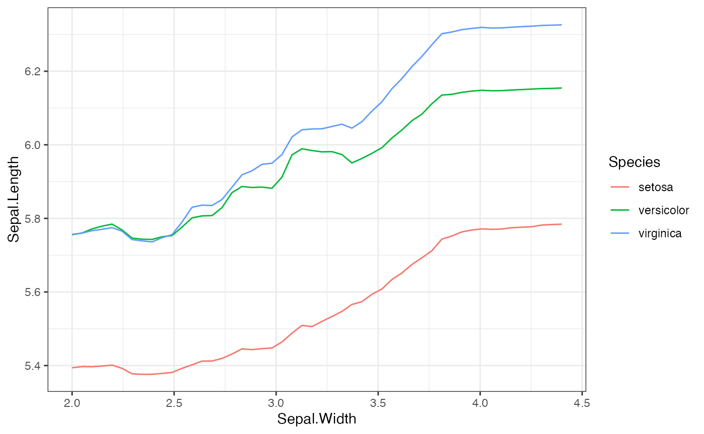

Local Surrogate Models for Bivariate PDP Functions
In some cases, it can be difficult to understand the output of a
bivariate PDP function. As an alternative to visualizing these
functions, we can fit a small decision tree using the PDP function
values as the outcomes and the two features (and possibly their
interaction) as the independent features. The
localSurrogate function in this package provides a more
comprehensive method for interpreting bivariate PDP results by both
plotting the output of the bivariate predictions and returning a
weak-learner decision tree. In this article, we demonstrate how to use
the localSurrogate function, and how to specify different
parameters of the weak learner returned.
# Load the required packages
library(distillML)
library(Rforestry)
# Load in data
data("iris")
set.seed(491)
data <- iris
# Train a random forest on the data set
forest <- forestry(x=data[,-1],
y=data[,1])
# Create a predictor wrapper for the forest
forest_predictor <- Predictor$new(model = forest,
data=data,
y="Sepal.Length",
task = "regression")
# Create the interpreter object
forest_interpret <- Interpreter$new(predictor = forest_predictor)This method is implemented in the localSurrogate()
function. The two arguments required are the Interpreter
object, and a two-column dataframe where each row is a pair of feature
names. The returned object consists of two distinct lists:
- plots: This list contains the bivariate PDP plots. For a pair of two continous features, this returns a heatmap. For a pair of one continuous and one categorical feature, this returns a conditional PDP plot, where the curves are grouped based on the continuous feature value.
- models: This list contains the weak learners, which can make predictions and be plotted for further visualization.
# Make the bivariate PDP function
local.surr <- localSurrogate(forest_interpret,
features.2d = data.frame(col1 = c("Sepal.Width",
"Sepal.Width"),
col2 = c("Species",
"Petal.Width")))
# examples of the plot
plot(local.surr$plots$Sepal.Width.Species)
plot(local.surr$plots$Sepal.Width.Petal.Width)
# examples of the weak learner
plot(local.surr$models$Sepal.Width.Species)
plot(local.surr$models$Sepal.Width.Petal.Width)We can also include the interation term between the pair of features
by specifying the argument interact to TRUE.
By default, this argument is FALSE. To change the
parameters of the weak-learner, we can specify a list of parameters
through the argument params.forestry. By default, the weak
learner uses one tree, with a maximum depth of 2. Below, we demonstrate
how one might use these arguments by including interactions and letting
the tree grow to a maximum depth of 3.
# Include interactions and let the maximum depth be 3
local.surr <- localSurrogate(forest_interpret,
features.2d = data.frame(col1 = c("Sepal.Width"),
col2 = c("Petal.Width")),
interact = T,
params.forestry = list(ntree = 1, maxDepth = 3))
# Plot the resulting local surrogate model
plot(local.surr$models$Sepal.Width.Petal.Width)For further details, please refer to the documentation on
localSurrogate provided in the “References” section.